Lab 1 - Day 0#
Overview#
In this lab you will deploy cloud infrastructure for ACE Inc. from scratch using the Aviatrix Multicloud Networking and Security platform. We are using the term Day 0 for the work done in this lab. Make sure you are logged in to your GitHub and Terraform Cloud accounts.
Here is an overview of the tasks in this lab:
Deploy an Aviatrix Controller/CoPilot from Self-Service.
Fork the ACE code for this lab as a remote repository in your own
GitHubaccount. Learn more about what forking a repo means here.Personalize the code for your account(s).
Connect GitHub with Terraform Cloud.
Adopt a VCS-driven workflow.
Deploy the following infrastructure from scratch for ACE Inc.
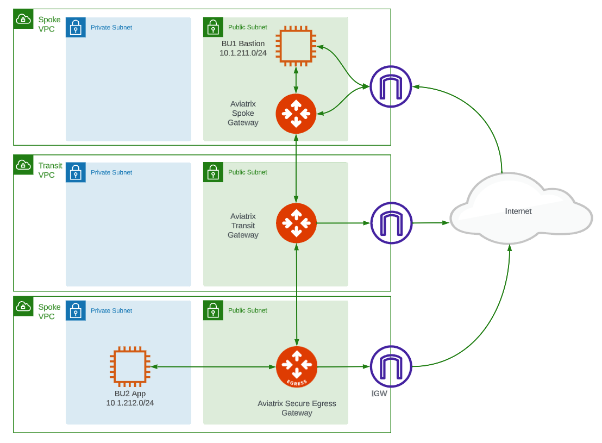
Aviatrix Self-Service#
Log into Aviatrix Self-Service and execute the Controller/CoPilot use-case.
Note the public IPs addresses for both Controller and CoPilot instances. We will be using them at different points in the lab. Note that all of the infrastructure that we’ll be creating will be via code. We’ll only use the UI to validate or visualize what’s been built.
In addition to deploying a Controller and CoPilot instance in AWS, the Self-Service Tool will also take care of onboarding your AWS account on the platform.
Note: This training focuses on AWS for both control plane and data path - although the concepts apply equally to other clouds. The power of Aviatrix!
GitHub#
Fork ACE code for this lab#
While logged into your GitHub account, create a new repository by visiting the ACE Automation repository.
Click Fork in the top-right corner of the browser.
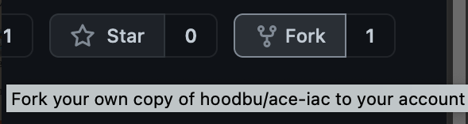
This will create a remote repository (aka repo) of the lab code in your own GitHub account.
Remember: your GitHub account is playing the role of Network Operator for ACE Inc.
Code Review#
Let’s take a look at the files in your forked ace-automation repository.
In Terraform, every file ending in .tf is considered. So they could all be in one big file, but the best practice is to have separate files for various purposes. Here is how each file has a purpose in this Lab:
main.tf - This file contains 1 module and 1 resource. We’ll be modifying this file at different points of the first two labs. The module is executing code located in the
_modules/day-zerosubfolder. The majority of the infrastructure being deployed is there. You’ll see references to other, externalAviatrixand AWSmodulesthat are available for anyone to use. These will create the networks, security groups, ec2 instances and Aviatrix gateways used in the lab. The power of modules is that you can write code once (or use other’s code) and reuse it any number of times to achieve consistent implementations of the configured infrastructure. For the purpose of these labs, we’ll keep it simple by modifying the files noted here. But, if you have interest in digging deeper, look into these child modules, particularly mc-transit and mc-spoke. These are the multicloud Aviatrix modules that deploy Aviatrix gateways and networks consistently across clouds.providers.tf - This file contains specific information about the
AviatrixandAWSTerraform providers that we are using in this training. The AWS provider is for creating theBU1andBU2bastion and app instances. All other resources, including vpc(s), will leverage theAviatrixprovider.variables.tf - Any variable with optional default values are provided here. For example, if you wanted to deploy the AWS infrastructure in a different default region than us-west-2 (Oregon), you would modify it here. You’ll note there are a couple variables with no default value. We will configured
Terraform Cloudto provide those values.versions.tf - This file has the configuration for the Terraform providers being used as well as the backend configuration (where the execution runtime and terraform state should be stored). In this case we’re using the terraform cloud backend for the organization you’ve created to both execute Terraform and store its state config.
Personalize the code for your accounts#
Now, let’s edit versions.tf
Be sure you’re on the ace-automation repo in your GitHub account.
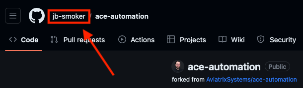
Click the Pencil icon to edit directly on GitHub.com cloud UI
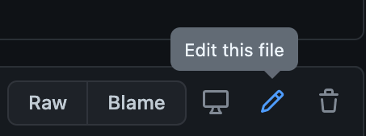
Uncomment this line:
# organization = "<replace-with-your-Terraform-Cloud-organization-and-uncomment>"
Edit it with the username of your Terraform Cloud organization account. Find it in the bottom-left corner on the Terraform Cloud UI page:
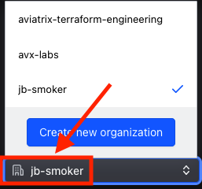
Back in GitHub page, at the bottom, click Commit changes directly to the main branch.
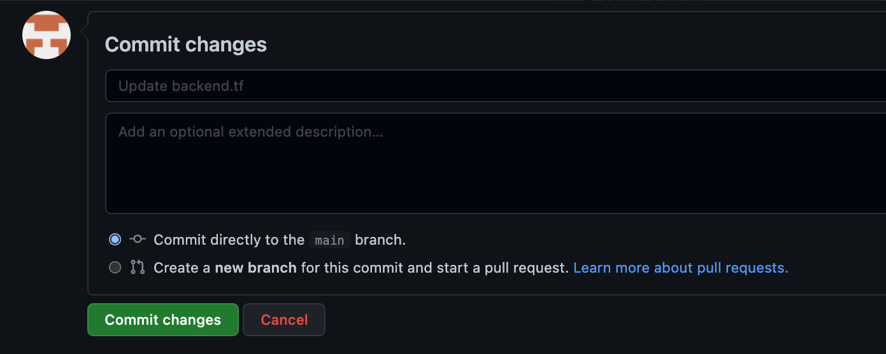
Terraform Cloud#
Set up workspace#
Create a new Workspace by clicking New, then Workspace.
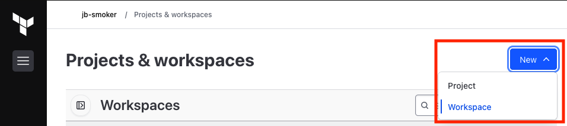
Select Version control workflow.
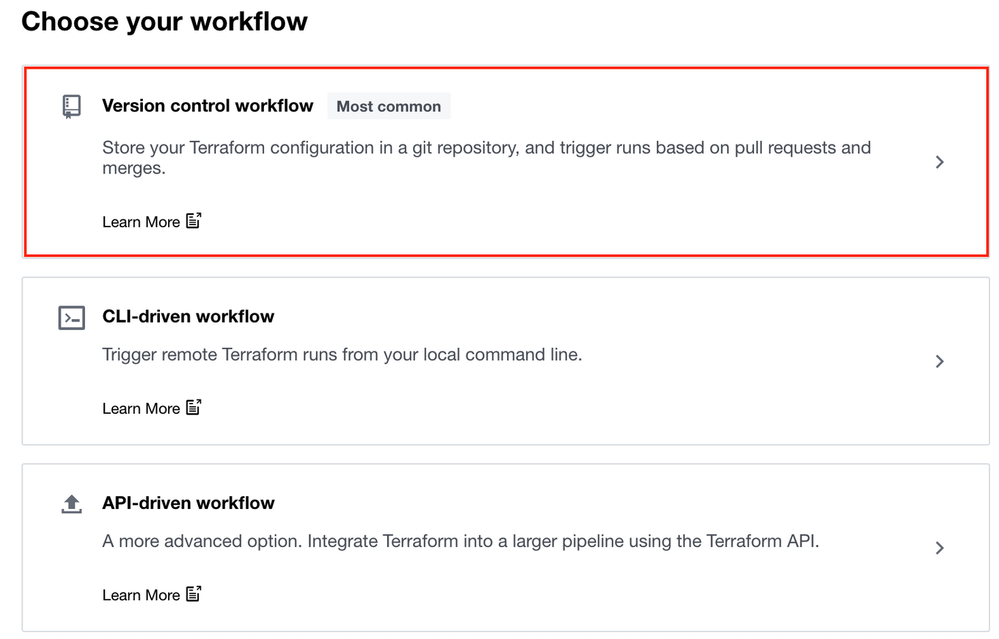
Under Connect to a version control provider, select GitHub.com
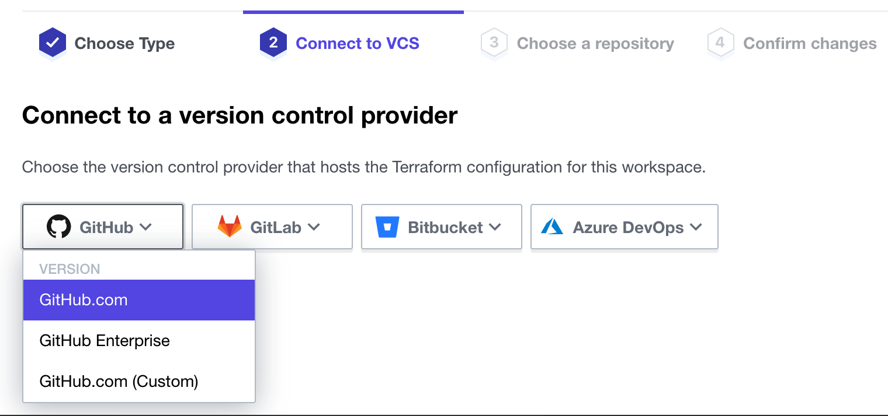
Authorize Terraform Cloud to verify your GitHub identity. If you do not see this message, disable your browser Ad Blocker as it is a pop-up dialog.
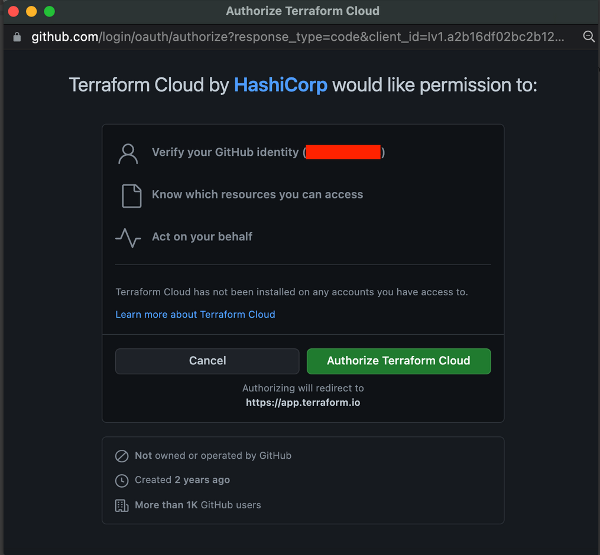
Install Terraform Cloud on your GitHub account. Keep the default of All repositories
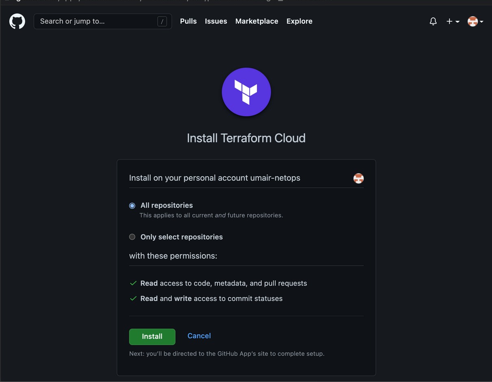
Choose the ace-automation repository
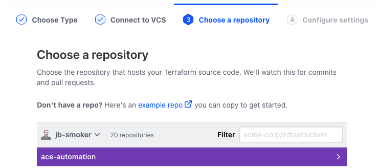
Keep the Workspace Name and Project as-is and click Create Workspace.
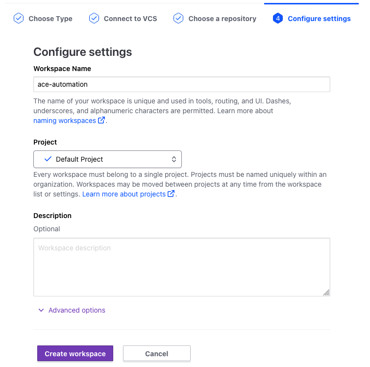
The Workspace will be created. For the next section, click on the workspace variables page link.
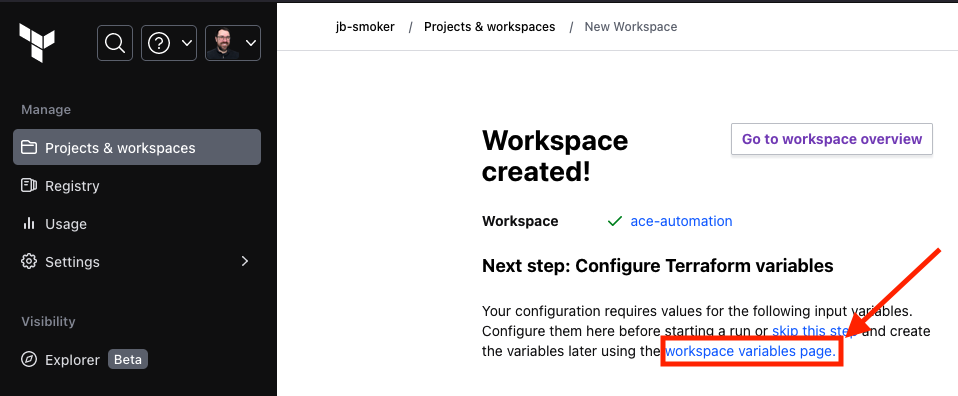
Configure Variables#
Here you will configure Terraform Variables and Environment Variables.
Locate the + Add variable button.
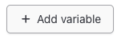
Then create/configure these two (2) Terraform Variable(s) as follows. Be sure to click the sensitive box for the password value:
controller_ip = Public IP address of your Controller
password = password you assigned to your Controller
If you didn’t deploy your Aviatrix Controller with the Self-Service tool, add an additional variable to override the default:
aws_account_name = the name your Aviatrix Access Account as it appears in CoPilot under
Cloud Resources-->Cloud Account
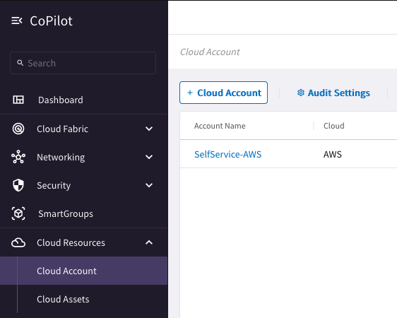
Then add these two (2) Environment Variables for your AWS Access and Secret Access Keys. As with the password above, be sure to click the sensitive box for the each value:
AWS_ACCESS_KEY_ID = AWS Access Key ID that has access to deploy EC2 instances, Security Groups, and Keypairs
AWS_SECRET_ACCESS_KEY = AWS Secret Access Key that matches the above access key
When you are done, it should look somewhat like this:
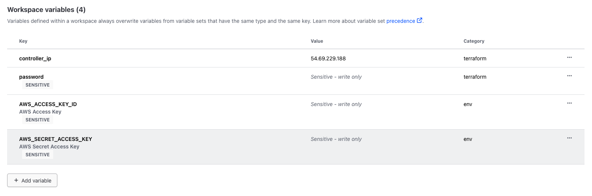
Terraform plan and terraform apply#
Move to the Overview tab in the left-hand navigation and perform a terraform Start new run by from the Actions menu on the right side.
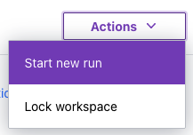
Then Start run
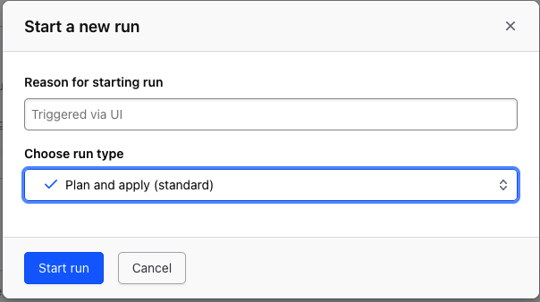
On the next page, you will see the output of the terraform plan and what resources will be built (number of resources may vary from screenshot).
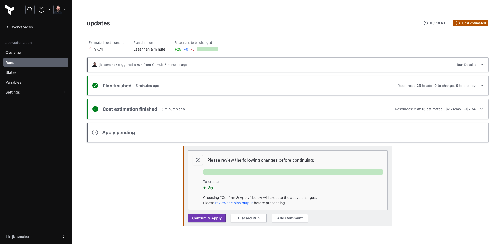
Click Confirm & Apply and add any notes. Then, click Confirm Plan This will issue the equivalent of terraform apply. Observe the progress of the resources being created by Terraform.
The infrastructure in Lab 1 should take about 10 minutes to build. When it has completes, you will see green output like this:
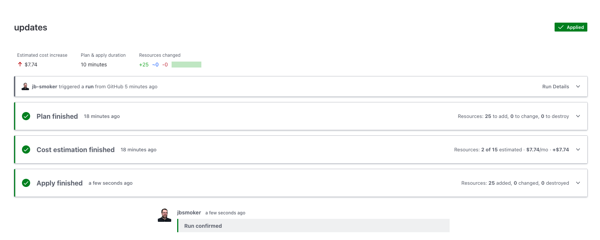
At the bottom of the Apply finished section, you will see output generated from the code in outputs.tf that will look like this:
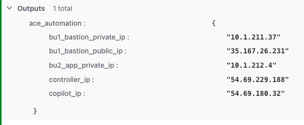
These are the Public and Private IPs of the Bastion host in BU1 (bastion spoke) as well as the Private IP of the App host in BU2 (app spoke).
At this point, you should be able to SSH to the BU1 Bastion as ubuntu and the password you set the password variable to above, but from there you won’t be able to SSH to the BU2 App. The reason for that is BU1 and BU2 are not yet connected. Verify from CoPilot by navigating to Networking-->Network Segmentation and and note that the 2 BUs are not connected:
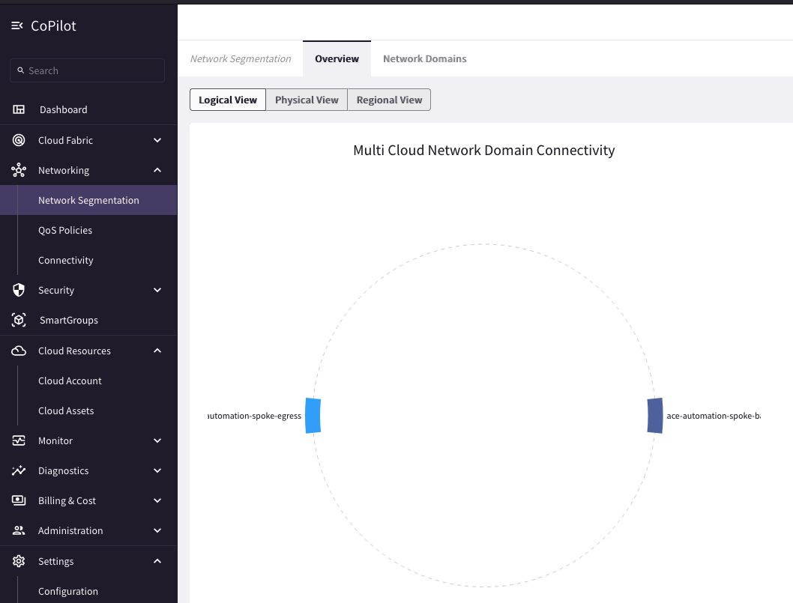
In Lab 2, you will configure a network domain Connection Policy via Terraform.
When you are ready to begin, click Lab 2 - Day 1 below.